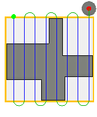

Zone de brut par défaut
Sélection d'arête de limite de surfaçage
Aucune sélection n'est requise pour la trajectoire d'outil de surfaçage. Le système applique automatiquement un surfaçage au brut défini dans les paramètres de configuration de la tâche.
Vous pouvez sélectionner une zone de n'importe quelle taille ou forme en vue d'appliquer un surfaçage. Cette zone peut être une sélection d'arête ou une sélection d'esquisse. La zone de brut à usiner est affichée en jaune.
 |
|
Zone de brut par défaut |
Sélection d'arête de limite de surfaçage |